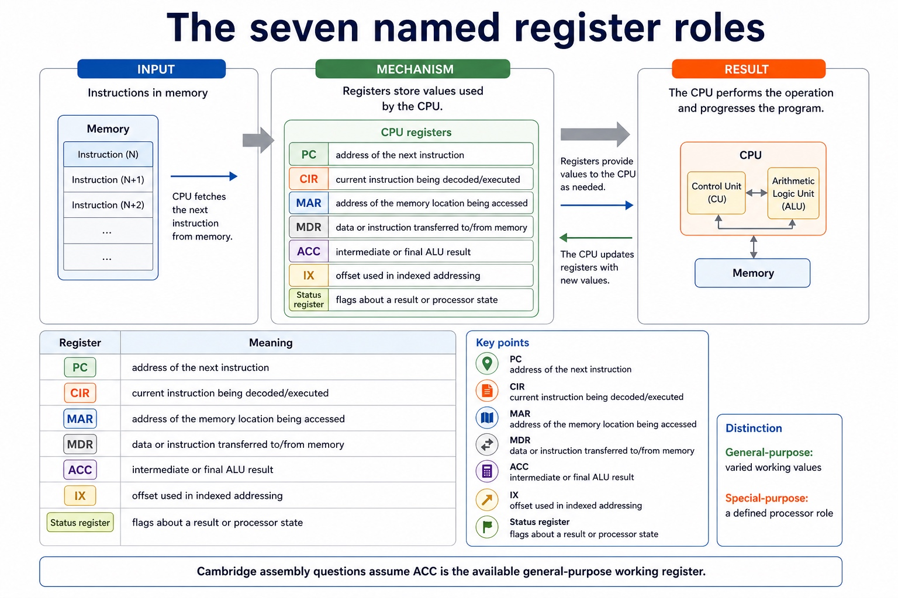

Cambridge AS9618 | Paper 1 | Section 4: Processor fundamentals
The fetch-execute cycle in register-transfer notation
Flexible-depth lesson
The fetch-execute cycle in register-transfer notation
S4.07 | Select what to omit, teach briefly or explore in depth.
Quickdiagnose + essentials
Fullcomplete explanation
Deepprerequisites + extension
Choosepractice by need
Teacher choice
Choose the depth for this group
Quick route
Use the diagnostic, learning objectives, first worked example and foundation question. Stop once the learner can explain the central distinction accurately.
Full route
Teach every core explanation point, the worked example and all lesson questions. Use the visual only when it adds a different representation.
Deep route
Add the prerequisite refresher, ask learners to connect the concept checklist, discuss the labelled extension and complete a transfer question without a model answer.
Part 1 | optional depth
Prerequisite knowledge and quick diagnostic
Recall S4.01 before starting this lesson.
Give one accurate definition or method step before continuing. If it is missing, revisit only that prerequisite.
Open optional prerequisite refresher
Show understanding of the basic Von Neumann model and the stored-program concept: instructions are stored in binary in the same directly accessible memory as data and are fetched for execution.
Understand Von Neumann architecture and the stored-program concept.
Part 2 | deliberately over-complete
Knowledge explanation
Learning objectives
Describe the fetch-execute cycle using register transfer notation.
Open the concept checklist and choose what to teach
register transfer notation / register-transfer notation
Detailed explanation
Teach all points, or select only the ones this group needs. The list is intentionally fuller than a fixed lesson slot.
Describe the stages of the Fetch-Execute cycle and use register-transfer notation, including MAR <- PC, MDR <- Memory[MAR], CIR <- MDR and a coherent PC update.
Register-transfer notation describes a data transfer or register update. The arrow <- means 'is loaded with' or 'receives'; it is not an equality sign. Memory[MAR] means the contents of the memory location whose address is currently held in MAR.
A coherent fetch sequence is MAR <- PC; MDR <- Memory[MAR]; CIR <- MDR; and PC <- PC + 1 at an appropriate point before the next fetch. The control unit then decodes the opcode and operand in CIR and sends control signals for execution.
During execution, notation such as ACC <- ACC + MDR records an arithmetic result in ACC, while Memory[MAR] <- MDR records a memory write. Read every statement from right to left: obtain the source value, then replace the destination contents.
The exact timing of PC increment may vary between coherent processor descriptions, but MAR must receive the current instruction address before that address is replaced. Register-transfer notation describes movement and updates; it does not imply that two registers permanently contain the same value.
Worked example
Trace one instruction fetch: Start with PC = 120 and Memory[120] = LDD 500. MAR <- PC puts 120 in MAR. MDR <- Memory[MAR] puts LDD 500 in MDR. CIR <- MDR copies the instruction into CIR. PC <- PC + 1 makes PC 121, ready to address the next instruction. The control unit then decodes LDD and executes it.

The seven named register roles. One maintained explanation is shown as an image on larger screens and as text on small screens.
PC holds the address of the next instruction to be fetched.
CIR holds the instruction currently being decoded or executed.
MAR holds the address of the memory location being accessed.
MDR holds data or an instruction being transferred to or from memory.
ACC holds an intermediate or final ALU result.
Part 3 | select by learner need
Practice by question type
describeexplainfoundation6 marks
Question 1. Using register-transfer notation, describe the fetch of one instruction and explain the meaning of Memory[MAR].
Show answer and marking guidance
Answer: MAR <- PC; MDR <- Memory[MAR]; CIR <- MDR; PC <- PC + 1 at a coherent point; Memory[MAR] means the contents at the memory address held in MAR; CIR is decoded and control signals initiate execution
Marking guidance: Do not accept PC <- MAR as the first transfer or treat Memory[MAR] as the address value itself.
Common error: For the command word describe, perform that exact action; do not replace it with an unrelated fact.
writerecallapplication2 marks
Question 2. Write register-transfer notation for adding the value in MDR to ACC.
Show answer and marking guidance
Answer: ACC <- ACC + MDR.
Marking guidance: Award one mark for each distinct, technically accurate point or method step.
Common error: Do not repeat the same point in different words; each mark needs a separate idea or method step.
applyrecalltransfer2 marks
Question 3. What does MAR <- PC mean?
Show answer and marking guidance
Answer: Copy the address currently in PC into MAR; PC is not changed by that transfer.
Marking guidance: Award one mark for each distinct, technically accurate point or method step.
Common error: Do not copy the worked example unchanged; transfer the method and check it against the new context.
Related past-paper indexes
Reference
Marks
Command word
Question type
9618/13/S/25 Q2(ii)
4
explain
explain
9618/13/S/25 Q2(b)
2
describe
explain
9618/13/W/23 Q9(b)
4
complete
recall
9618/13/S/23 Q7(c)
2
complete
recall
Index only: Cambridge question and mark-scheme wording is not reproduced on this public course page.
Part 4 | close when ready
Summary and exam reminders
Summary
Define the fetch-execute cycle in register-transfer notation with the exact technical vocabulary expected by the syllabus.
Use the lesson method on a fresh context and show the intermediate decision, representation or calculation.
Match the shape of the answer to the command word and the available marks.
Check the final answer against the scenario instead of repeating a memorised sentence.
Common error to correct
Students often memorise register names without roles. Correction: a register earns its name by what it temporarily holds.
Exam technique
Follow the command word: state gives a fact; explain links a cause to a consequence; compare covers both sides.
Match the number of independent points or method steps to the available marks.
For the fetch-execute cycle in register-transfer notation, use the exact technical term before applying it to the scenario.